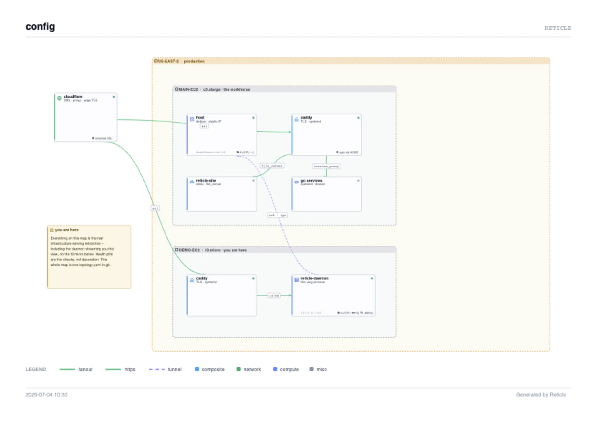

Free Desktop
Open source and local only
Map a homelab or environment in one YAML file. Keep it in Git, edit it visually or in your editor, and query it locally through JSON or read-only MCP. No account or Reticle cloud service required.
Define your topology once in Git-tracked YAML. Reticle adds current health evidence, then serves the same operating picture to the visual map, JSON API, and read-only MCP—locally in the free desktop app or continuously from one Team Daemon inside your network.
One YAML · One customer-hosted daemon · Unlimited teammates · No agent shell access
Explore the read-only graph behind reticle.live, served live from one shared daemon.
Pan, inspect, and export. This public view cannot edit or run actions. Open full screen ↗
Map a homelab or environment in one YAML file. Keep it in Git, edit it visually or in your editor, and query it locally through JSON or read-only MCP. No account or Reticle cloud service required.
Run one commercial daemon from a trusted host inside your network. It continuously updates the graph and serves authorized teammates, internal integrations, and read-only agents through the browser, JSON API, and MCP.
Reticle builds one canonical graph from configured topology and current health evidence. The canvas, JSON API, and read-only MCP all inspect that same snapshot—so an operator looking at a failure and an agent investigating it receive the same nodes, relationships, health state, and observation times.
Understand dependencies and current health at a glance.
Feed the graph into internal tools, incident workflows, and automation.
Let agents inspect production context without granting shell or action access.
Reticle complements your metrics and logs; it does not replace them.
Reticle’s MCP server is intentionally read-only. Agents can inspect topology, dependencies, current signals, and bounded history, but they cannot open a shell, submit commands, or execute named actions. Human operators retain the execution boundary through server-configured actions, approvals, preconditions, and timeouts.
Read-only is not a missing feature. It is the trust boundary.
Reticle reduces operational ambiguity: understand the system, choose a safer next move, and preserve context through the incident.
See what exists, what is unhealthy, what depends on it, and how fresh the evidence is before changing anything.
Place current evidence beside preconfigured actions with approvals, timeouts, and optional preconditions.
Keep topology, evidence, operating notes, and actions together to reduce change-context latency and operational handoff time.
Start with fixed HTTP and read-only SSH checks. Deeper diagnostics require Desktop's global privileged toggle, or Team's daemon flag and editor authorization. Custom checks and guarded actions have bounded output and timeouts; actions require approval by default.
Desktop offers a warned operator shell. Team has no browser or ad-hoc shell. Viewers, JSON, MCP, and chat never receive command text or execution controls.

Export the entire graph, not just the viewport, as a one-page vector PDF for handoffs, postmortems, and reviews.
It is a presentation snapshot, not an audit log or durable evidence store.

Serve one live graph to authorized teammates and integrations from a trusted network vantage point.